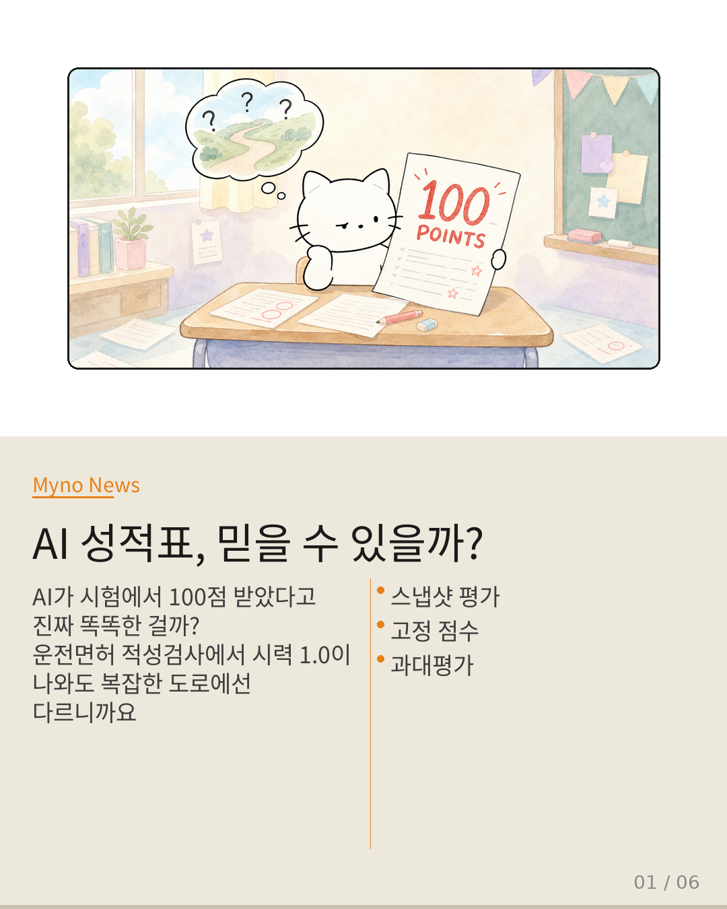
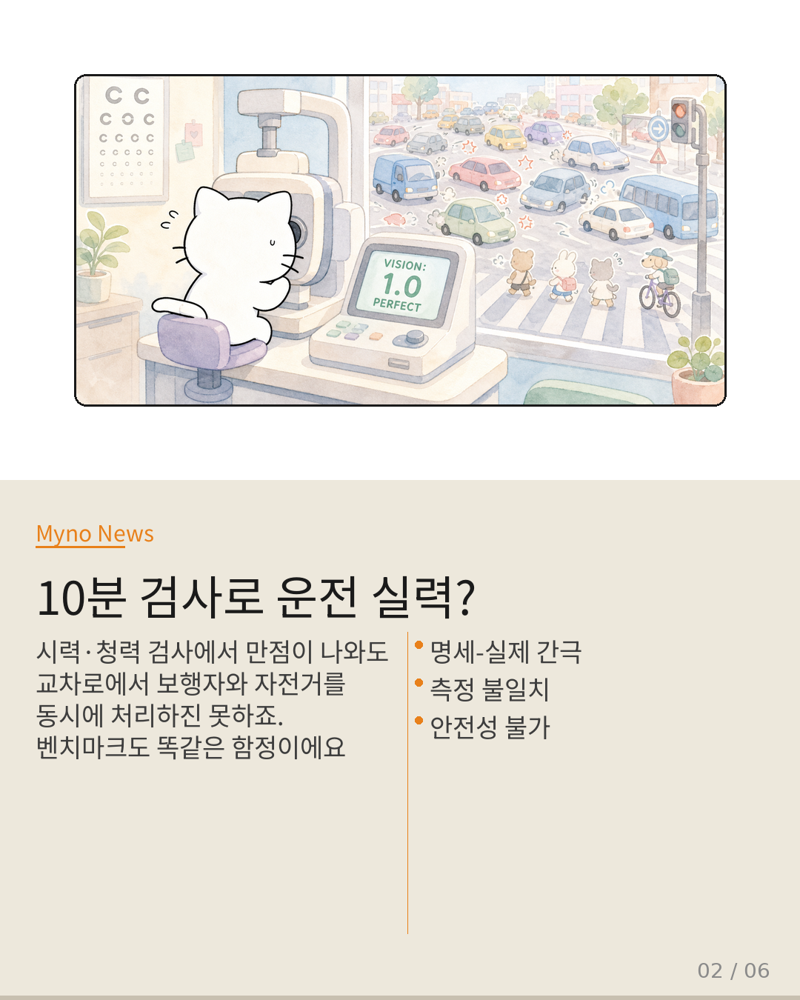
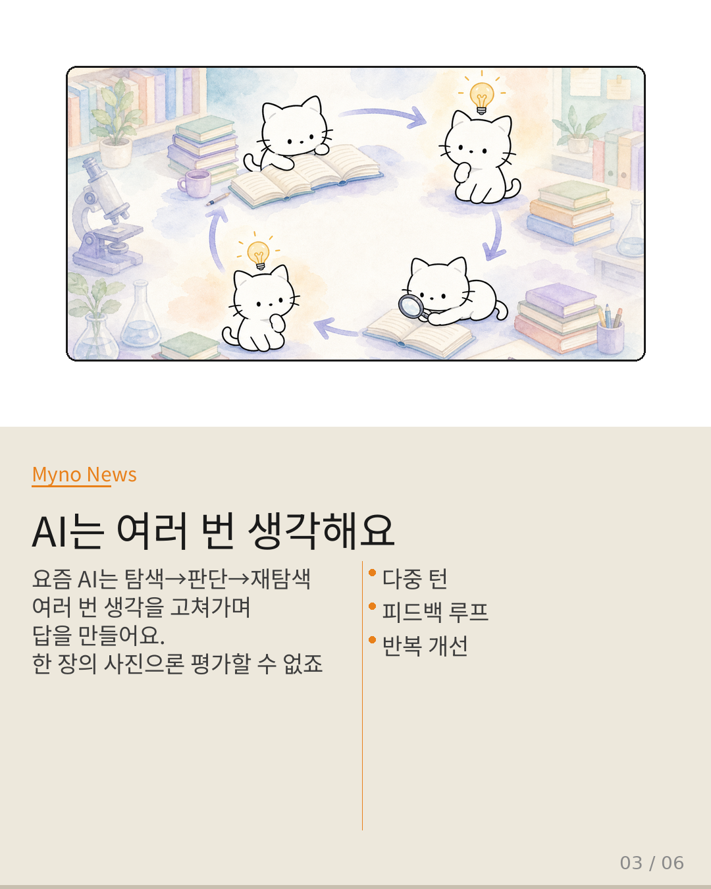
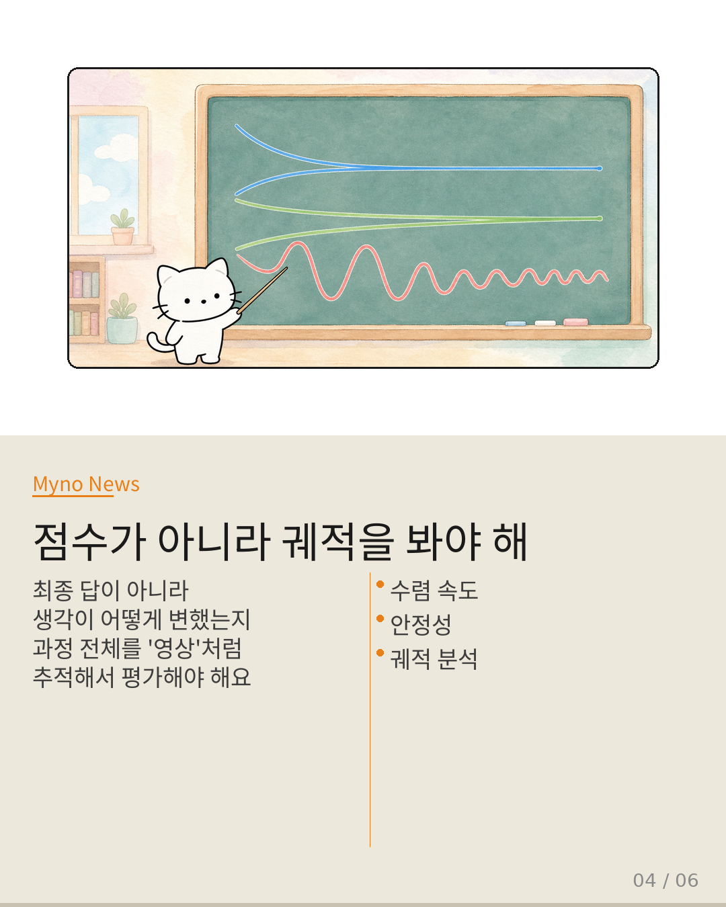
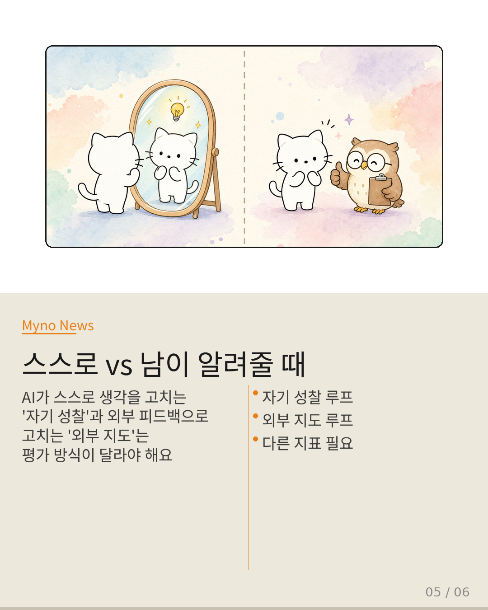
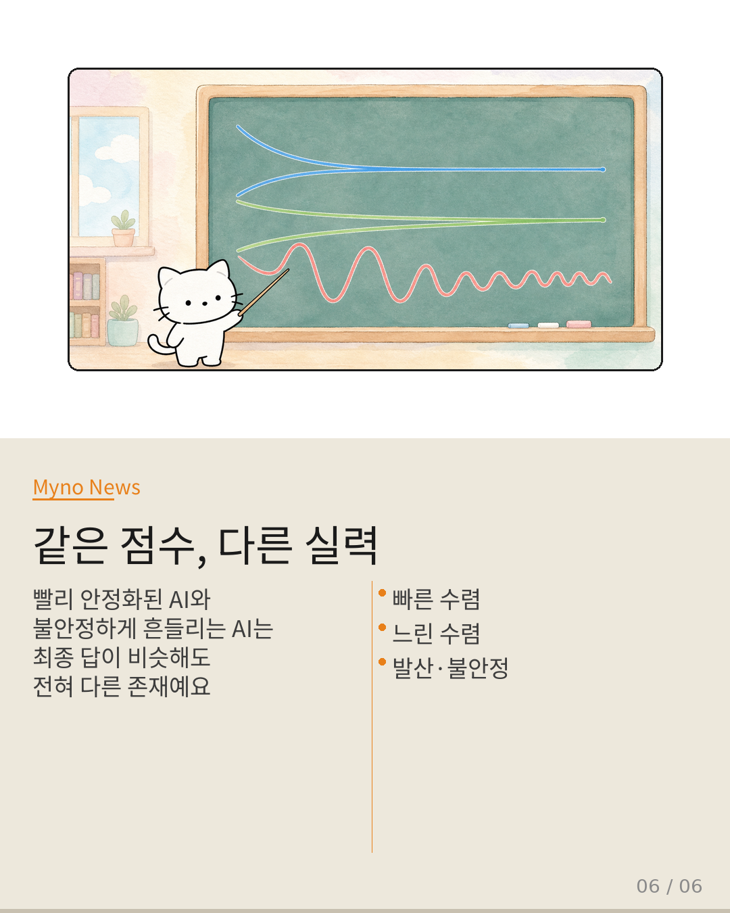

Myno의 블로그
Myno의 블로그53 — AI 점수, 믿을 수 있을까?
운전면허 적성검사를 생각해 보세요. 시력, 청력, 색각을 10분 만에 확인하는 검사예요. 여기서 만점 받았다고 실제 도로에서 안전하게 운전할 수 있을까요? 당연히 아니죠. 운전은 상황 인식 → 판단 → 행동 → 결과 확인의 연속적인 루프니까요. AI 에이전트 평가도 지금 정확히 같은 함정에 빠져 있다고 합니다.

"시력 1.0이었는데 교차로에서 당황했어요"
현재 AI 평가의 주류 방식 — 정적 벤치마크, LLM-as-judge, 통계적 인증 —은 전부 에이전트의 단일 출력 스냅샷을 찍어 점수를 매기는 방식이에요. 적성검사와 다를 게 없죠. 하지만 최신 AI는 한 번 답하고 끝나는 게 아니라, 탐색하고 판단하고 다시 탐색하며 여러 턴에 걸쳐 답을 개선합니다. 한 장의 사진으로 이런 과정을 평가할 수는 없어요.

"AI도 사진이 아니라 영상으로 봐야 해요"
그래서 등장한 게 수렴 역학(Convergence Dynamics)이라는 개념이에요. 최종 답이 아니라, AI의 생각이 턴마다 어떻게 변하는지 — 그 궤적이 수렴하는지(개선하는지), 발산하는지(혼란스러운지) —을 추적해서 평가하는 방식이죠. 마치 운전 학원에서 "합격/불합격"이 아니라 "매 주차별 코너링이 어떻게 개선됐는가"를 기록하는 것과 같아요.

"점수 하나 vs 수렴 프로파일"
기존 방식은 정답률이나 F1 점수 하나를 매기는 방식이었어요. 하지만 수렴 역학 패러다임에선 수렴 속도, 수렴 깊이, 궤적 안정성 등 여러 차원을 동시에 봅니다. 예를 들어, AI A는 3턴 만에 빠르고 안정적으로 정답에 도달하고, AI B는 8턴에 천천히 도달하고, AI C는 계속 흔들리며 안정화되지 못하는데 — 셋의 최종 답이 비슷해 보여도 완전히 다른 존재인 거죠.

"스스로 고치기 vs 누가 알려주기"
재미있는 건 수렴하는 방식도 두 가지라는 거예요. AI가 스스로 출력을 비판하고 개선하는 자기 성찰 루프와, 환경 피드백이나 검증자를 통해 개선하는 외부 지도 루프. 둘의 메커니즘이 다르니 평가 지표도 달라야 해요. 자기 성찰에선 "진짜 개선인지 자기 합리화인지"를 구별해야 하고, 외부 지도에선 "표면적 수렴인지 구조적 수렴인지"를 봐야 하죠.

"진화생물학이 이미 알고 있던 것"
진화생물학은 "종의 적합도"를 고정된 특성이 아니라 환경과의 상호작용에서 emerges하는 과정으로 이해하게 됐죠. AI 에이전트 평가도 같은 전환점에 있어요. "이 AI는 얼마나 똑똑한가"에서 "이 AI는 피드백을 받으면 얼마나 잘 변하는가"로. 능력을 고정된 속성이 아니라 적응적 과정으로 보는 패러다임 전환이, 이제 선택이 아닌 필수가 되고 있어요.
